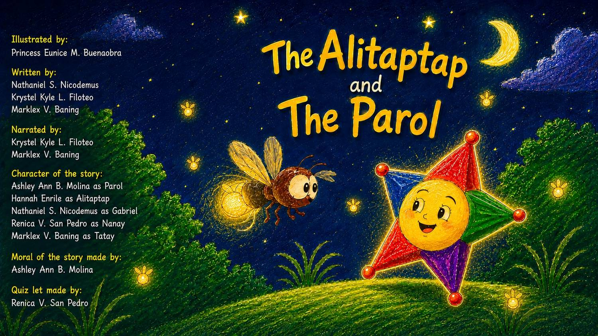
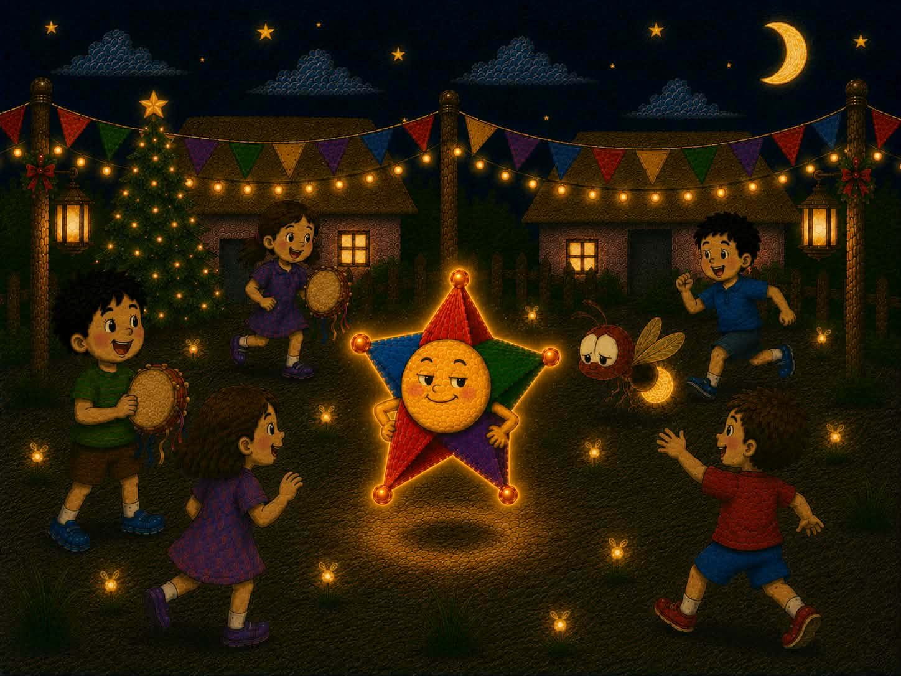
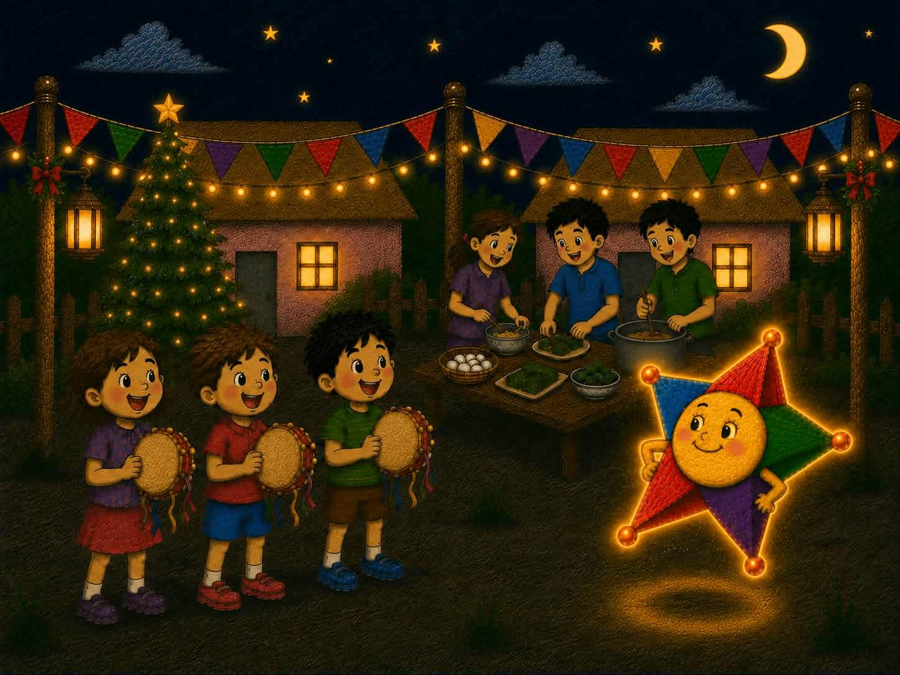
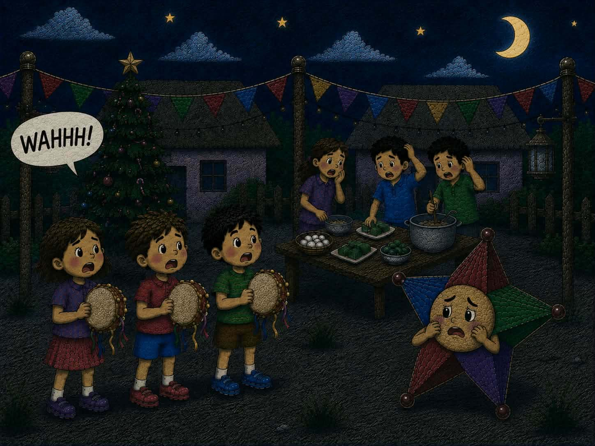
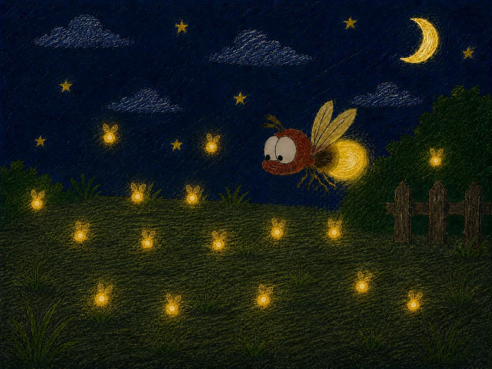
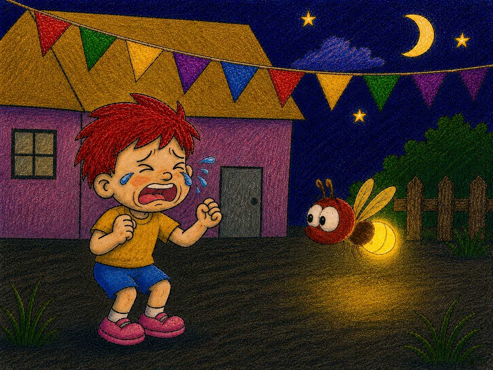
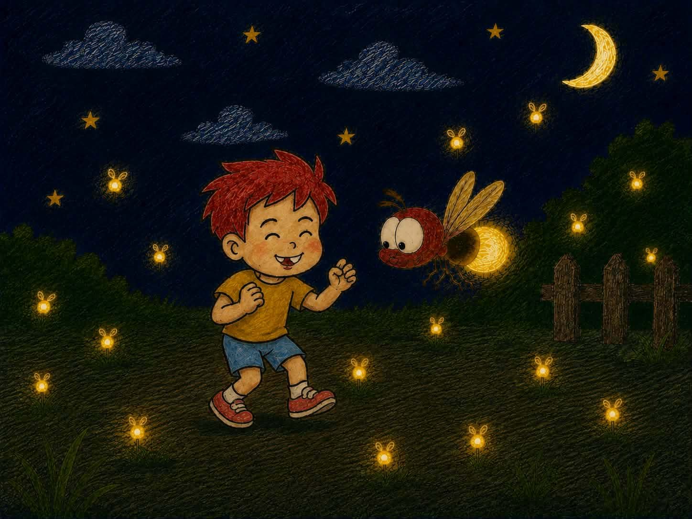
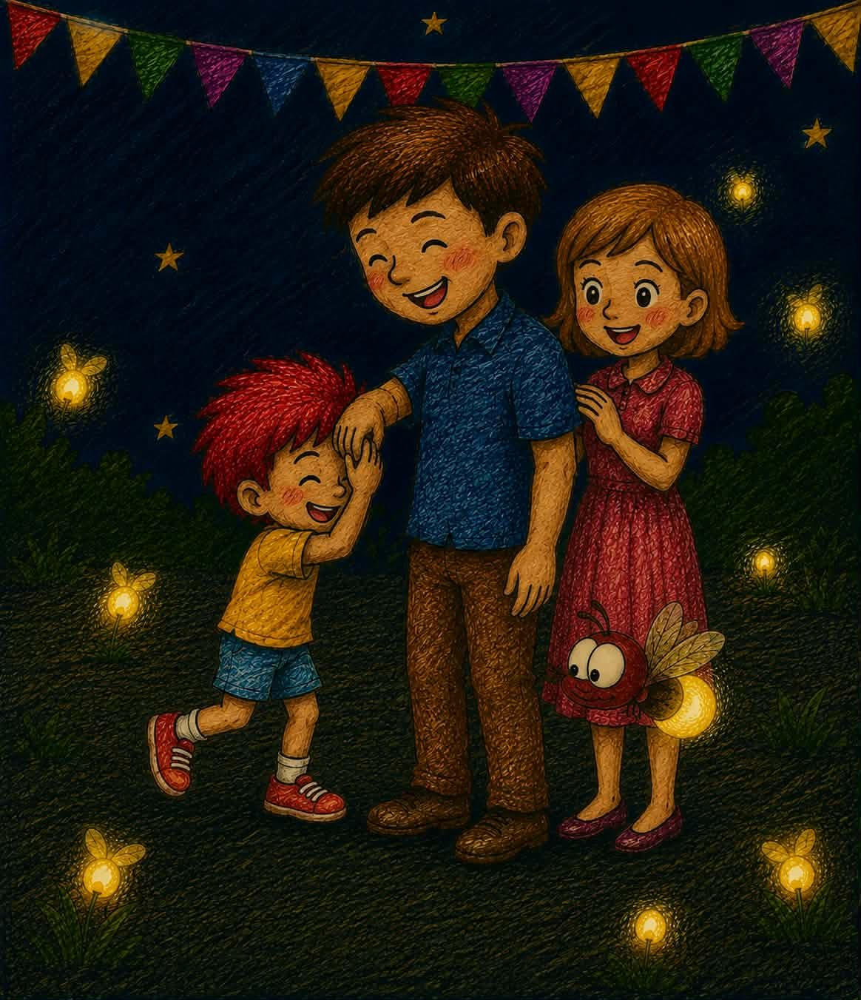
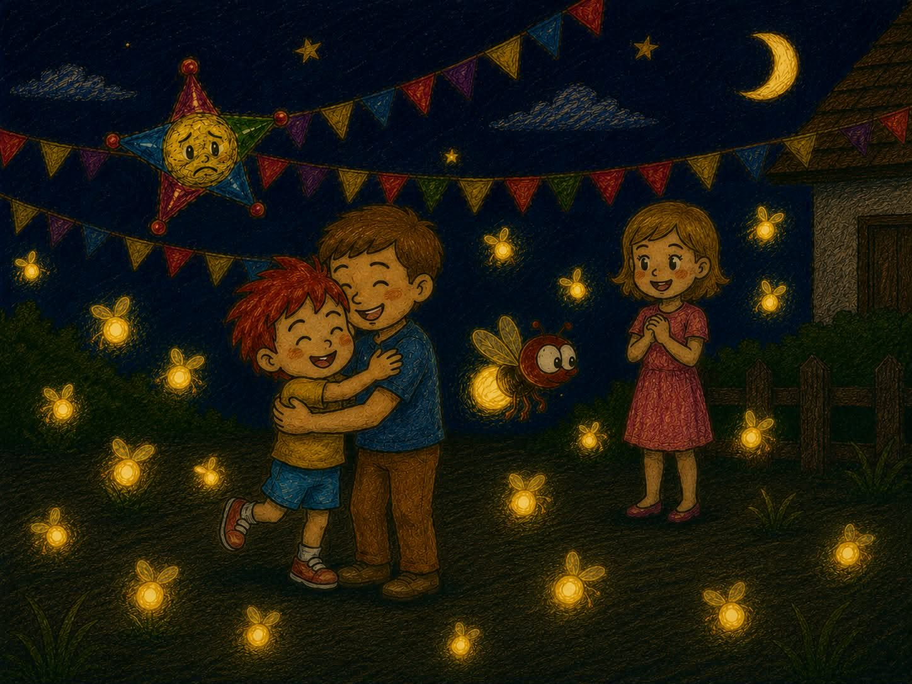

Story 04
The Alitaptap and the Parol

Great Book · Story 04
The Alitaptap and the Parol
00:00 --:--
The narration for this story has not been recorded yet.
Narrated by Krystel Kyle L. Filoteo and Marklex V. Baning
Once upon a time in a small town called San Jose, the ber months season came and there lived a colorful and bright Parol named “Bituin”. She views the alitaptaps as weak and useless because of their tiny bodies and dull light, for she believes that she’s the most important light in the town because she possesses the brightest glow. “Twinkle twinkle twinkle poor little alitaptaps, completely worthless and too small to be recognized by the others!” said Bituin as she shows off her powerful majestic light.

But on Christmas Eve, when the town people were preparing for Noche Buena after attending Simbang Gabi…

…a sudden blackout occurred while a few kids were doing their pangangaroling. With no source of energy to serve as the town’s power, Bituin stared in shame at the confused people for being unable to serve as their light. “WAAAAA!” a sudden cry of a child was heard from a distance.

In curiosity, Ilaw the alitaptap approached the sobbing kid and asked “Blink blink blink what’s wrong my dear friend?” The kid then replied “I lost my parents when I was doing my Christmas carols and now I can’t find them because there’s no lights!” he cried even more while explaining to Ilaw. “Don’t worry my friend, I will ask my fellow alitaptap to help you! What’s your name?” Ilaw asked the kid while reassuring him. With light sniffles, the kid replied “I’m Gabriel.”


With the help of Ilaw and his fellow alitaptaps who created a glowing path to guide Gabriel, they eventually found his parents.

“Nanay! Tatay! Mano po!” said Gabriel in excitement as he approached his parents and took their hands to his forehead.

“Oh Gabriel, we were so worried!” Tatay said to express his relief as they both hugged Gabriel. “Thank you fireflies! We don’t know how else we were going to find Gabriel if none of you were there to light the way!” Nanay said with gratitude. Bituin, who was watching the whole moment unfold while still being unable to light up, realized that one should never insult another because no matter how small someone can be, they’re capable of creating a big difference.

Check what you remember
-
Who was the colorful and bright parol in the story?
- Ilaw
- Bituin
- Gabriel
- Nanay
-
Why did Bituin look down on the alitaptaps?
- They were noisy
- They were too small and had dull lights
- They lived far away
- They could not fly
-
What happened on Christmas Eve?
- It rained heavily
- A fire started
- A sudden blackout occurred
- The town had a party
-
Who was the lost child?
- Gabriel
- Ilaw
- Bituin
- Tatay
-
How did Ilaw and the other alitaptaps help Gabriel?
- They carried him home
- They created a glowing path to guide him
- They called his parents
- They gave him a parol